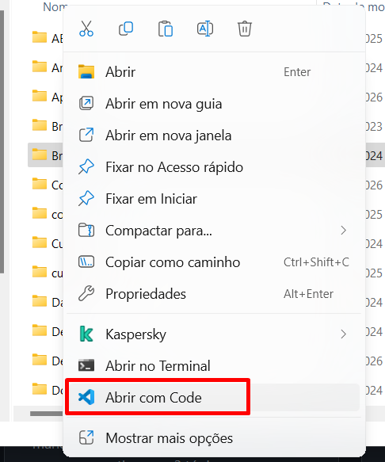

Vamos transformar dados brutos em resultados úteis com o Copilot
- Entender o que é um arquivo CSV
- Transformar CSV em tabela HTML visual
- Converter CSV para formato JSON
- Criar estatísticas básicas dos dados
📄 O que é um arquivo CSV?
CSV = Planilha do Excel em formato texto
Imagine uma tabela do Excel, mas salva como texto simples, onde cada vírgula separa uma coluna. É o formato mais comum para trocar dados entre sistemas.
Como parece no arquivo:
Como o Copilot vai transformar:
| Nome | Idade | Cidade |
|---|---|---|
| João | 30 | São Paulo |
| Maria | 25 | Rio de Janeiro |
| Pedro | 40 | Curitiba |
📋 Nosso Arquivo de Dados
Usaremos este arquivo de exemplo chamado dados.csv. Abra-o no VS Code antes de continuar:
Clique com botão direito na pasta do projeto → Abrir com Code
No Explorador de Arquivos do Windows, botão direito na pasta Projeto-CSV — aparece a opção abaixo:

Copie o arquivo dados.csv para a pasta Projeto-CSV
O arquivo está disponível em: Parte-4-Exercicio-CSV/dados.csv
Abra o arquivo no VS Code
Clique no arquivo no Explorer lateral e verifique que o conteúdo aparece corretamente
🎯 Passo 1 — Transformar em Tabela HTML
Com o arquivo dados.csv aberto no VS Code, vá ao Copilot Chat e use este prompt no Agent Mode:
O que o Copilot vai fazer:
1. Lê o CSV
Entende a estrutura dos dados automaticamente
2. Cria o HTML
Gera uma tabela visual completa com estilos
3. Salva o arquivo
Cria um novo arquivo resultado.html no projeto
🎯 Passo 2 — Converter para JSON
Ainda com o dados.csv aberto, use este prompt no Agent Mode:
O CSV assim:
Vira JSON assim:
🎯 Passo 3 — Estatísticas dos Dados
Nosso terceiro e último prompt para este exercício:
Resultado esperado no arquivo:
🎉 Parabéns! Você transformou uma planilha simples em 3 formatos diferentes com o Copilot!
✅ Resultado do Exercício CSV
Você criou 3 arquivos a partir de 1 planilha CSV:
resultado.html
Tabela visual com todos os dados, pronta para visualizar no navegador ou enviar por email
dados.json
Dados estruturados prontos para integrar com sistemas, APIs e dashboards
relatorio-estatisticas
Análise com totais, médias e distribuição — como .txt simples ou relatório HTML visual →
🚀 Aplicação no dia a dia da Everymind:
Qualquer exportação de sistema (CRM, ERP, RH, financeiro) normalmente gera arquivos CSV. Com o Copilot, você transforma esses dados em relatórios, emails e dashboards em minutos!